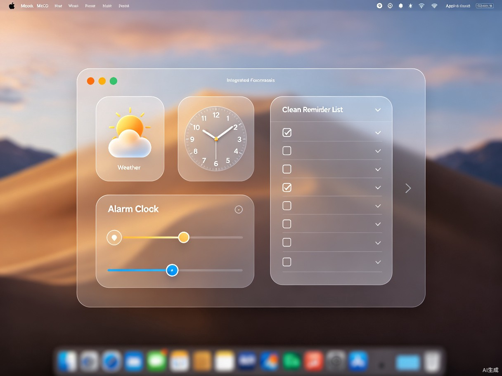

历境 · macOS 桌面日历
一款融合万年历、节假日、天气、提醒的精美 macOS 原生日历应用，
以液态玻璃设计重新定义桌面时间管理体验。
🔍 发现的问题
macOS 系统自带的日历不支持农历显示，App Store 中现有的中文日历应用普遍存在一个困境——功能好用但界面不够精美，界面漂亮的又缺少实用功能。同时，不少曾经优秀的日历工具已经停止更新，无法适配最新的 macOS 版本。
📅 缺少农历与节假日
系统日历不支持农历、节气和法定节假日调休安排，国内用户需要额外工具来查看。
🎨 界面设计跟不上
现有应用风格陈旧，与 macOS 新设计语言脱节，缺乏液态玻璃等现代视觉效果。
⚡ 功能碎片化
用户需要打开日历、天气、闹钟、提醒事项等多个应用来完成日常时间管理。
🔧 更新停滞
曾经好用的日历工具（如 Fantastical 等）对中文场景支持不足或停止维护。
💡 产品概览
历境是一款专为国内 macOS 用户打造的精美桌面日历应用。采用 Apple 原生设计语言（SwiftUI），融合液态玻璃（Glassmorphism）界面风格，将万年历、农历、节气、法定节假日、天气、闹钟和提醒事项整合在一个优雅的桌面工具中。
- 产品形态：macOS 原生桌面应用（基于 SwiftUI 构建）
- 核心定位：颜值与功能兼得的中文日历工具
- 设计风格：液态玻璃（Glassmorphism）+ 毛玻璃模糊效果
- 目标平台：macOS 14+（Sonoma 及以上，支持最新视觉特性）
🗓️ 核心功能：万年历日历
精准的万年历引擎，覆盖 1900-2100 年的农历、节气与法定节假日数据。支持调休安排、宜忌查询，完全适配国内用户的实际使用需求。
- 农历日期实时显示，支持阴历生日、纪念日设置
- 24 节气自动标注（立春、雨水、惊蛰...）
- 法定节假日及调休安排（春节、国庆、清明等）
- 多视图切换：月视图、周视图、年视图
- 日历提醒与日程管理
🖱️ 交互 Demo：日历组件
点击日期查看详细信息（农历、节假日、节气、提醒等）
🧩 扩展效率工具
围绕"时间"这一核心维度，将日常高频使用的工具深度整合，告别在多个应用之间频繁切换的烦恼。
闹钟提醒
支持多组闹钟设置，可选择重复周期（工作日/自定义），与日历日程智能联动。
天气预报
实时天气与未来 7 日预报，温度、湿度、空气质量一目了然，桌面小组件常驻显示。
提醒事项
快速创建待办事项，支持优先级、标签分类、到期提醒，与日历日期无缝关联。

✨ 价值与意义
商业价值：切入市场空白
国内 macOS 用户群体持续增长，但中文日历工具赛道长期缺乏高品质原生应用。"颜值 + 功能"双优的产品定位，能够有效捕获对设计有追求的用户群体，通过 freemium 模式（基础功能免费 + 高级主题/数据订阅）实现商业闭环。
效率提升：一站式时间管理
将万年历、天气、闹钟、提醒整合为统一入口，减少用户在不同应用间的切换成本。液态玻璃视觉设计降低认知负担，信息获取效率提升，"打开应用就能看到今天需要知道的一切"。
⚙️ 技术方案
采用 Apple 最新的原生开发技术栈，确保性能与视觉效果的完美结合。